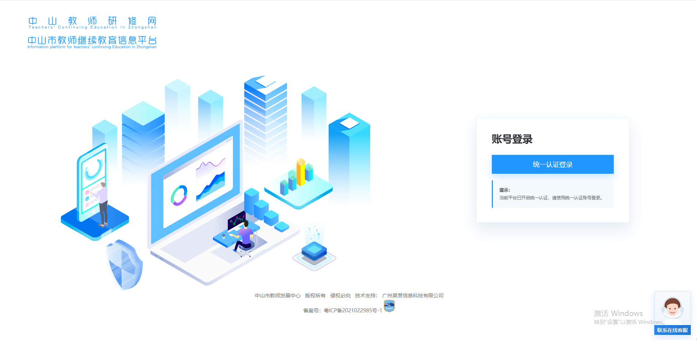
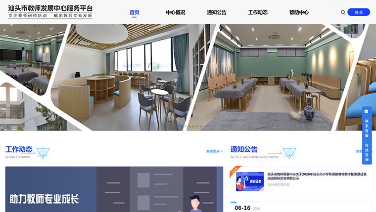
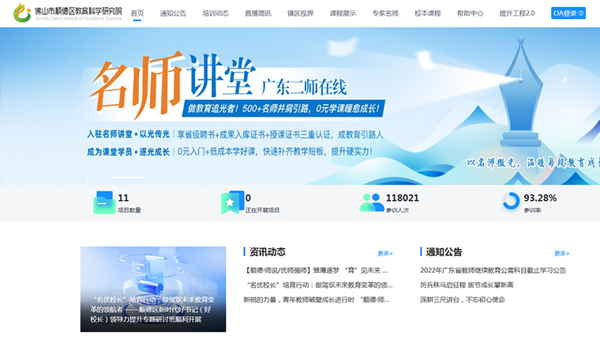

真实项目，持续创造教育数字化价值
围绕教育管理、教师发展和机构数字化，沉淀可验证、可延续的建设经验。
省级教师继续教育
广东省教师继续教育信息管理平台
建设省级教师继续教育数字化支撑体系，推动业务统一管理、数据贯通和精准治理。
高校教师发展
广东二师在线
构建高校赋能教师发展的智慧生态，推动教育资源价值释放和教师教育服务能力升级。

区域教师发展
中山教师研修网·中山市教师继续教育信息平台
搭建全周期教师成长档案，打造教师成长梯队数字化支撑体系。

区域研训服务
汕头市教师发展中心服务平台
构建研训一体化数字服务体系，支撑全市教师继续教育培训运营全过程管理。

区域在线研修
顺德区教师在线研修管理系统
构建区域教师研修数字化服务体系，以灵活学习模式和智能服务助力专业发展。
智慧党校
中共中山市委党校智慧党校管理服务平台
构建覆盖校务全场景的一体化智慧党校综合服务体系。
教育资源
广东第二师范学院2026年省级培训课程资源及服务采购项目
承接广东第二师范学院2026年三类省级培训项目（中小学与高校骨干教师培训、数字素养提升培训、粤东粤西粤北地区教师能力提升培训）网络培训资源及技术服务，围绕25个子项目、2062名参训教师开展网络研修。
教育资源
中山市教师继续教育网络课程资源及服务采购项目
承接中山市教师继续教育网络课程资源及服务采购，以“平台+课程”一体化模式，面向中山市约 4.7 万名专任教师开展教师网络研修。